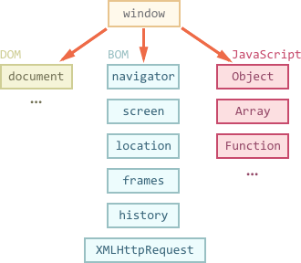
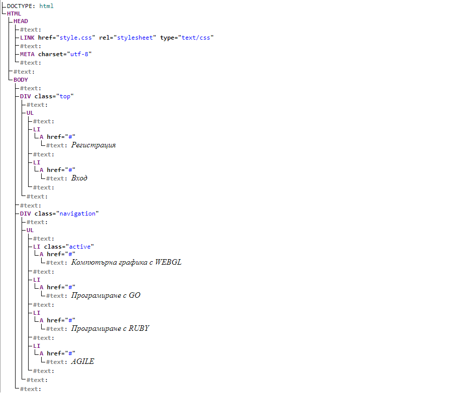
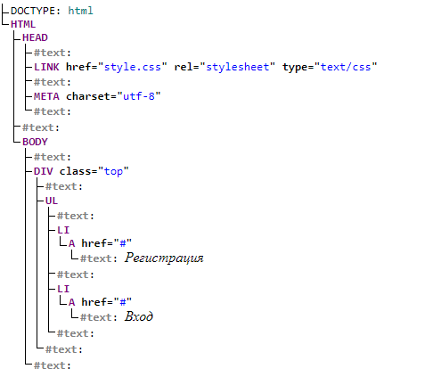
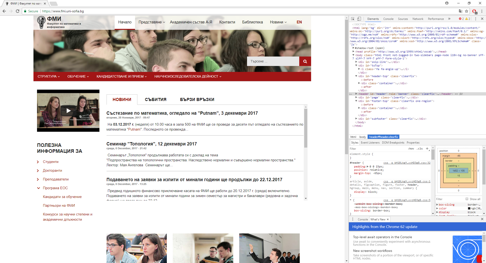

DOM дърво, обхождане и манипулация
1. Какво всъщност представлява DOM?
Document object model (накратко DOM) е универсален интерфейс, който позволява на различни програми и скриптове динамично да достъпват и да променят съдържанието, структурата и стила на даден документ. Той е част от Browser object model (BOM), който предоставя интерфейс за комуникация с браузъра посредством JavaScript. На фигурата по-долу е представена структурата му от птичи поглед.

Фиг.1 BOM от птичи поглед
Предметът на този реферат е клонът, който е с начало обекта document. Съдейки по името на модела съдържанието на една страница се представя като съвкупност от обекти и функции за работа с тях.
Към настоящия момент има две основни организации, които се занимават с публикуването и развитието на документацията към DOM модела: W3C,WhatWG.
Зачитайки се в документациите, които те разработват можем да забележим, че има известни разлики, но
и двете са тясно свързани една с друга и имаме приблизително 99% съвпадение.
1.1. DOM като стандарт
В началото е нямало никакъв стандарт - всеки браузър е имал свой собствен интерфейс. Това е налагало уеб страниците да имат различни версии за
съответния браузър. След появата на DOM, интерфейсите биват унифицирани. По настоящем се използва четвъртата версия на DOM стандарта (DOM Level 4 според W3C, докато WhatWG използват просто наименованието DOM).
Важен за отбелязване е и фактът, че DOM моделът не е обособен само за работа с браузъра. Тъй като той описва структурата на даден документ и функциите, с които можем да го манипулираме, съществуват и други видове инструменти, които го използват.
Например сървърните инструменти, чрез които можем да свалим определена HTML страница и да я обработим.
1.2. CSSOM
Тъй като CSS правилата не са структурирани както HTML съдържанието, съществува отделна спецификация, която ги описва като отделни обекти, наречена CSSOM. Този модел се използва заедно с DOM, когато променяме стиловите правила за даден документ.
2. DOM дърво
Основните елементи на една HTML страница са таговете. Съгласно DOM модела, всеки таг е обект. Вложените тагове се наричат "деца" на съдържащия ги. Дори и текст, който се намира вътре в даден таг също се счита за обект. По този начин се изгражда така нареченото DOM дърво. Всички обекти от това дърво са достъпни с помощта на JavaScript.
Пример: Нека имаме следната HTML страница
<!DOCTYPE html>
<html>
<head>
<link href="style.css" rel="stylesheet" type="text/css">
<meta charset="utf-8">
</head>
<body>
<div class="top">
<ul>
<li><a href="#">Регистрация</a></li>
<li><a href="#">Вход</a></li>
</ul>
</div>
<div class="navigation">
<ul>
<li class="active"><a href="#">Компютърна графика с WEBGL</a></li>
<li><a href="#">Програмиране с GO</a></li>
<li><a href="#">Програмиране с RUBY</a></li>
<li><a href="#">AGILE</a></li>
</ul>
</div>
</body>
</html>
Код 1. Примерен код на HTML страница
На снимката по-долу виждаме структурата на DOM дървото, изградено на базата на кода по-горе.
Фиг.2 DOM изглед на страницата
Всеки таг е елемент на дървото като още се нарича elemen node. Текстът във всеки един таг формира т.нар. text node.
Той съдържа само символен низ. Може да няма деца и в повечето случаи представлява листо на нашето дърво.
Важна за отбелязване особеност са специалните символи - newline и space. Те са напълно коректни символи и се представят от text node, като стават отделна част от структурата на дървото.
Съществуват две изключения:
- Ако имаме подобни символи преди
<head>тага, то те се игнорират по исторически причини; - Ако сложим нещо след
<body>тага, то автоматично ще бъде включено в тялото на страницата ни.
Затова и няма как да имаме празни символи след като сме затворили тялото на страницата.
3. Autocorrection
Ако браузърът срещне някаква малформация в HTML кода, той автоматично го поправя, когато изгражда DOM дървото. Нека да имаме следният код:
<!DOCTYPE html>
<head>
<link href="style.css" rel="stylesheet" type="text/css">
<meta charset="utf-8">
</head>
<body>
<div class="top">
<ul>
<li><a href="#">Регистрация</a></li>
<li><a href="#">Вход</a></li>
</ul>
</div>
</body>
Код 2. Проста уеб страница
Фиг.3 DOM изглед на страницата
Виждаме, че въпреки липсата на <html> тага,
той присъства като елемент от DOM дървото. Обикновено когато генерира структурата на дадена страница,
браузърът автоматично обработва грешките в съдържанието като затваря незатворени тагове и т.н.
4. Изобразяване на DOM дървото в браузъра
Един от начините да разгледаме DOM дървото на дадена уеб страница е като използваме browser developer tools на съответния браузър. Като пример ще разгледаме DOM дървото на страницата на ФМИ.
Фиг.4. DOM структурата в браузър
Както се вижда на снимката DOM структурата на сайта е показан в секцията Elements. Като имаме възможност да видим атрибутите на таговете, както и тяхното конкретно съдържание. Имаме възможност да наблюдаваме даже и стиловото оформление.
5. Обхождане на DOM дървото
Използвайки стандарта имаме възможност да оперираме с елементите на нашия документ - както с тяхното съдържание, така и със стиловото им оформление. За целта, обаче, трябва първо да достигнем до елемента, който желаем да променим, да го прихванем с помощта на променлива и след това да извършим желаните промени. Всички операции с DOM започват със обекта document. От него можем да достъпим всеки един възел от дървото.
<script>
let html = document.documentElement; // documentElement връща най-близкия наследник на обекта document в DOM дървото, който всъщност е html обектът
let body = document.body; // за основните елементи на една страница има готови опции, които връщат тяхното съдържание - може да не съществува все още и да бъде със стойност null
let head = document.head;
</script>
Код 3. Селектиране на основни елементи от дървото
5.1. Несъществуващи елементи
Нека започнем с обхождане на основните елементи на една HTML страница. Първият елемент в страницата или по друг начин казано
най-близкият наследник на document обекта можем да достъпим чрез опцията document.documentElement. Обикновено това е <html> тага.
Друг широко използван елемент е тялото на нашата страница, а именно document.body. Тук обаче идва и уловката, а именно, че той може да върне стойност null. С други думи тялото на страницата ни може да бъде празно.
Тогава скриптът не може да обработи такъв елемент, защото значението на null е буквално, че нещо "не съществува".
Затова е необходимо да се подсигурим, че когато оперираме с даден обект, той действително съществува.
<!DOCTYPE html>
<html>
<head>
<script>
alert("Executing from head tag and the body tag is "+document.body);
</script>
</head>
<body>
<script>
alert("Executing from body tag to test body and it is "+document.body);
alert("Executing from body tag to test head tag and it is "+document.head);
</script>
</body>
</html>
Код 4. Тестване за наличност на елементите
5.2. Деца и наследници
Под "дете" ще разбираме всеки пряк наследник на даден обект, а под "наследници" ще разбираме всички елементи, които се съдържат в съответния обект (с други думи tag).
Колекцията childNodes ни дава достъп до всички деца, включително и text nodes.
В примера по-долу обхождаме преките деца на тялото на страницата:
<!DOCTYPE html>
<html>
<head>
</head>
<body>
<p>Start paragraph</p>
<ul>
<li>List item 1</li>
<li>List item 2</li>
<li>List item 3</li>
</ul>
<div>
End
</div>
<script>
for(let indx=0;indx<document.body.childNodes.length;indx++){
alert(document.body.childNodes[indx]);// div,text,script...every child
}
</script>
</body>
</html>
Код 5. Извеждане на елементите в тялото на страницата
Атрибутите firstChild, lastChild ни дават бърз достъп до първото и последното дете на нашият обект.
Има редица функции, които са предназначени за работа с колекцията childNodes като childNodes.length, която връща броят на децата, hasChildNodes(), която проверява дали даден елемент има деца и т.н.
5.3. Обхождане само на елементи
Използвайки колекцията childNodes ние се обръщаме до всички деца на даден елемент. За някои цели, обаче, е необходимо да обходим само тези елементи, които изобразяват HTML таговете.За целта използваме същата функционалност, която прилагаме към останалите колекции от деца, но в имената на функциите и атрибутите фигурира името Element:
children- използваме за всички обекти, които са element nodes;firstElementChild,lastElementChild- първи и последен елемент на колекциятаchildren;previousElementSibling,nextElementSibling- съседните елементи от колекциятаchildren;parentElement- родителят от тип elementNode.
6. Промяна на съдържанието на документ
Както вече няколко пъти споменахме, DOM моделът е средство за представяне и обработване на съдържанието на даден документ. Вече разгледахме представянето на една страница под формата на DOM дърво, както и средства за обхождането му. Тук ще се съсредоточим въхру промяна на съдържанието на документа, което от своя страна води и до промяна на структурата на DOM дървото.
Разглеждаме следния тестови пример:
Искаме да добавим нов навигационен линк в менюто на нашия реферат. Нека нашата навигация да бъде представена като неподреден списък, към който е добавено някакво стилово оформление. Едно решение на нашата задача е да добавим нов списъчен елемент, който да представя нашата нова връзка. Тук обаче няма да направим това, а ще използваме JavaScript, за да променим DOM дървото на нашата страница и да решим задачата, която си поставихме.
6.1. Създаване на елемент
Първата стъпка, която трябва да направим е да създаден нашия обект, който ще добавяме към DOM дървото. За целта можем да приложим няколко метода:
Първият метод е чрез функцията
createElement(tag). Тя създава нов елемент с посочения като параметър таг;Вторият метод се отнася за text node обект, който можем да създадем посредством функцията
createTextNode(text), като text е символен низ;
В нашия случай искаме да създадем обект, представящ <a> тага, затова вторият метод не е напълно удачен. След като създадем обекта, следва да му добавим съответните атрибути, както и да му добавим съдържание.
<script>
function addLink(){
let liTag = document.createElement('li');
liTag.id = "newLink";
liTag.innerHTML = "<a href='#'>Видяхте ли ме?</a>";
}
</script>
Код 6. Създаване на новия елемент
6.2. Добавяне на елемент в DOM дървото
След като сме създали нашия обект, следва да то добавим към структурата на вече изграденото DOM дърво. Ако искаме да добавим елемента в тялото на документа, можем да използваме специалната за това функция на обекта body, а именно
document.body.appendChild(node) - тя добавя посочения като параметър обект като последно дете на тялото. В нашия случай, обаче, трябва да добавим елемента в наследник на тялото на страницата което прави тази функция неудачна за употреба.
За целта ще използваме други функции:
рarentElem.appendChild(node)- добавя node като последен наследник на parentElemparentElem.insertBefore(node, nextSibling)- добавя node преди наследника nextSibling в parentElem;parentElem.replaceChild(node, oldChild)- заменя node с oldChild измежду наследниците на parentElem;
С оглед на това да бъдем изчерпателни ще добавим, че ако искаме да бъдем по-гъвкави в добавянето на елементи, можем да използваме следните функции:
node.append(...nodes or strings)- добавя параметрите на функцията в края на node;node.prepend(...nodes or strings)- добавя параметрите на функцията в началото на node;node.before(...nodes or strings)- добавя параметрите на функцията преди node;node.after(...nodes or strings)- добавя параметрите на функцията след node;node.replaceWith(...nodes or strings)- заменя node с параметрите на функцията.
Друг интересен метод за добавяне на елемент е и функцията elem.insertAdjacentHTML(where, html), която добява елемента, представен от параметъра html под формата на символен низ, на мястото, указано от параметъра where, спрямо обекта elem. Възможностите за where са следните:
"beforebegin" – добавя html преди началото на elem;
"afterbegin" – добавя html като първи елемент след началото на elem;
"beforeend" – добавя html като последен за elem;
"afterend" – добавя html след края на elem;
//... <ul id="nav">...
<script>
function addLink(){
let liTag = document.createElement('li');
liTag.id = "newLink";
liTag.innerHTML = "<a href='#'>Видяхте ли ме?</a>";// създали сме го в предишният пример, остава да го добавим
nav.appendChild(liTag);// нашият списък е с id = nav
}
</script>
Код 7. Добавяне на елемента от преди малко
6.3. Клониране на елемент
За целта използваме функцията elem.cloneNode(param), която в зависимост от стойността на param може да клонира:
всички атрибути и съдържащи се елементи на elem, ако param=true или само конкретния елемент, без неговите деца, ако param=false.
6.4. Премахване на елемент
Имаме две възможности:
parentElem.removeChild(node)- премахва node от parentElem, ако той е негово дете;node.remove()- премахва node от неговото място.
Важно е да отбележим, че ако искаме да преместим даден елемент, то при преместването се извършва автоматично премахване на елемента от предишното му място в DOM дървото.
<script>
function remove(){
let elem = document.getElementById('newLink');// избираме елемента с идентификатор newLink
elem.parentNode.removeChild(elem);// or elem.remove();
}
</script>
Код 8. Премахване на елемента от примера ни
6.5. Решението на задачата от началото на точката
След като споменахме методите за създаване, добавяне, премахване и клониране на елементи, нека се върнем обратно на примера и да видим до къде стигнахме.
Целият код, събран на едно място би изглеждал така:
<script>
function addLink(){
let liTag = document.createElement('li');
liTag.id = "newLink";
liTag.innerHTML = "<a href='#'>Видяхте ли ме?</a>";
nav.appendChild(liTag);
}
function remove(){
let elem = document.getElementById('newLink');
elem.parentNode.removeChild(elem);
}
</script>
Код 9. Всичко заедно
За да видите резултата от изпълнението на кода, използвайте бутоните по-долу.
7. Заключение
Като заключение можем да кажем, че DOM моделът е изключително силно средство за работа със съдържанието на даден документ.
С негова помощ можем динамично да променяме както смисъла, така и стила на
на една страница с помощта на JavaScript. По този начин увеличаваме гъвкавостта ѝ и улесняваме лесната машинна обработка, която може да бъде извършваша. Също така за хората, които са запознати с ООП парадигмата, до голяма степен биха се чувствали комфортно да работят съгласно DOM стандарта, тъй като е налице известна прилика.
8. Използвана литература
[1] "Browser: Document, Events, Interfaces"
последно посетен на 9.12.2017г.
[2] "Document Object Model (DOM)"
последно посетен на 9.12.2017г.
Други ресурси
[1] "Prism Syntax Highlighter за изобразяване на примерен код"
последно посетен на 8.12.2017г.
[2] "Live DOM Viewer за визуализацията на DOM дърво за примерите"
[http://software.hixie.ch/utilities/js/live-dom-viewer/]
последно посетен на 8.12.2017г.
9. Списък с код и фигури